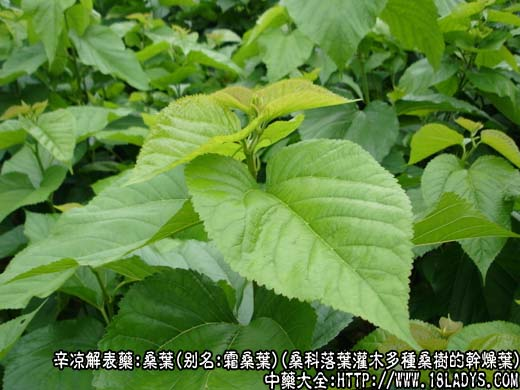
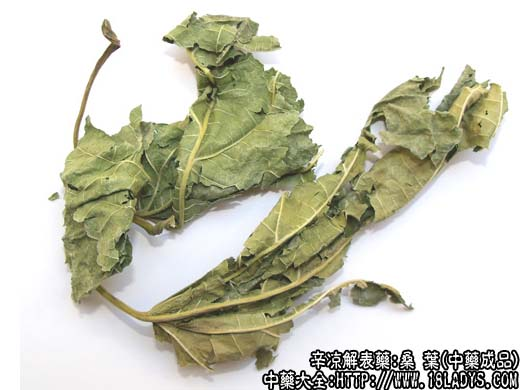
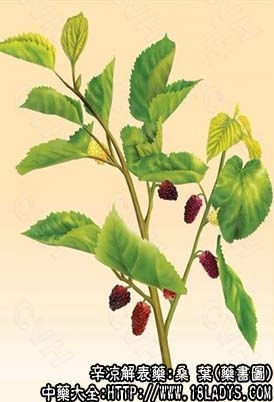

桑叶为常用中药。《神农本草经》列为中品。
别名：霜桑叶。
来源：为桑科植物落叶灌木或乔木多种桑树的干燥叶。多为栽培。
产地：全国大部地区均产。
性状鉴别：商品大部已破碎。完整叶片呈卵形或宽卵形，长约15厘米，宽约10厘米，叶柄长约4厘米，叶片基部心脏形，顶端微尖，边缘有锯齿，叶脉密生白柔毛。老叶较厚黄绿色。嫩叶较薄，暗绿色。质脆易碎，握之扎手。气淡，味微苦涩。一般认为霜后采者质佳。
主要成分：含异槲皮甙、牛膝甾酮少量有机酸、腺嘌呤、胆硷等。
功效与作用：解热、祛痰、镇咳。
性味：苦、甘、寒。
归经：肺、肝经。
功能：疏风清热，凉血明目。
主治：风热感冒，咳嗽头痛，目赤。
临床应用：1、多用于治疗外感风热引起的较轻的发热、咳嗽、眼赤（如感冒），常与菊花、连翘等配伍，如桑菊饮，为辛凉轻剂。
2、用于治疗肺热和风热咳嗽，尤其适用于燥咳、干咳，常配枇杷叶、麦冬、沙参等。
3、配黑芝麻用于治疗肝、肾阴虚的头眩、眼花、头痛，可明目醒脑。再加配丹皮、丹参，用于治疗偏头痛。多为制丸服食。
用量：6～12g。
处方举例：桑菊饮（《温病条辨》）：桑叶9g，菊花9g，苦杏仁9g，连翘12g，薄荷3g（后下），桔梗6g，生甘草3g，芦根18g，水煎服。
注：桑树品种不一，其叶亦异。如：
1、鸡桑叶的边缘有不整齐的粗锯齿和深锯齿。
2、蒙桑叶的边缘有粗锯齿，齿端有剌尖。
3、华桑又名葫芦桑，叶的上面疏生糙伏毛，下面密生细柔毛，边缘有粗钝齿。（药材商品通用）。